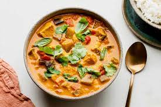

Red Curry

Forget ordering takeaway and make your own Thai red chicken curry at home. This classic dish takes just 15 minutes to prep and it's bursting with flavour.
ingredients
- vegetable oil
- 1tbsp ginger & garlic paste
- red curry paste
- 800ml coconut milk
- 8 skinless, boneless chicken thighs, cut into large chunks
- 4 lime leaves (ideally fresh)
- tbsp fish sauce
- 1tsp brown sugar
- Thai basil
- basil or coriander, plus extra to serve
- 1 red chilli, sliced diagonally
- humb-sized piece ginger, cut into matchsticks
- cooked jasmine rice, to serve
- Heat 1 tbsp vegetable oil in a large saucepan over a medium heat and fry 1 tbsp ginger and 1 tbsp garlic paste for 2 mins. Add 5-6 tbsp red curry paste, sizzle for a few secs, then pour in 800ml coconut milk.
- Bring to the boil, reduce to a simmer, stir a little and wait for the oil to rise to the surface.
- Add 8 skinless, boneless chicken thighs, cut into chunks, and lime leaves, and simmer for 12 mins or until the chicken is cooked through.
- Add 1 tbsp of the fish sauce and a pinch of brown sugar, then taste – if you like it a little saltier, add more fish sauce; if you like it sweeter, add a little more sugar.
- Bring to the boil, take off the heat and add ½ small pack Thai basil.
- Spoon the curry into four bowls and top with 1 red chilli, a thumb-sized piece of ginger and a few extra basil leaves. Serve with jasmine rice.